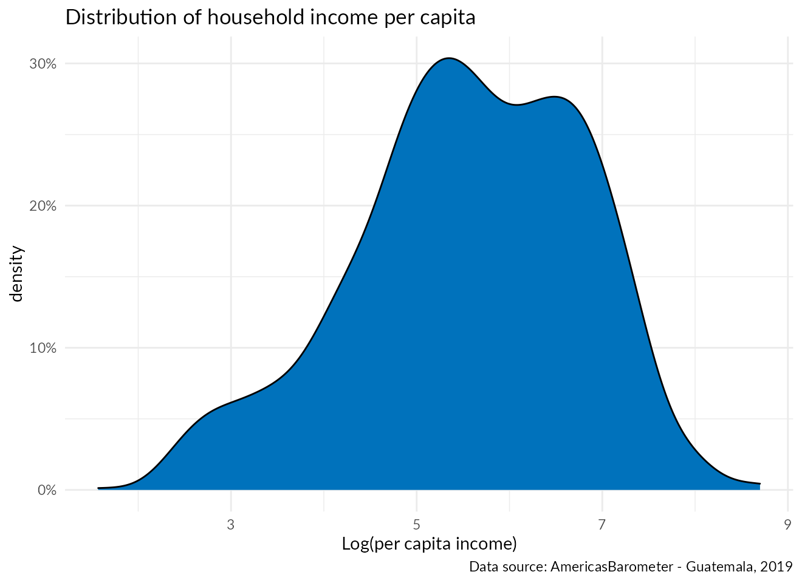
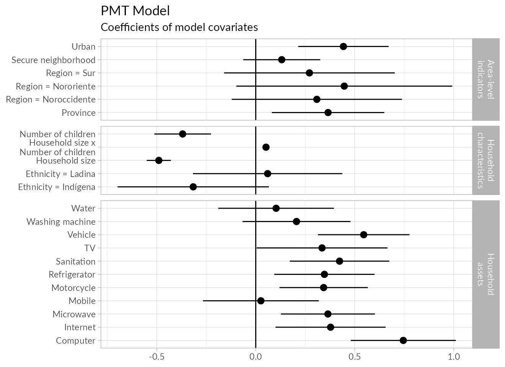
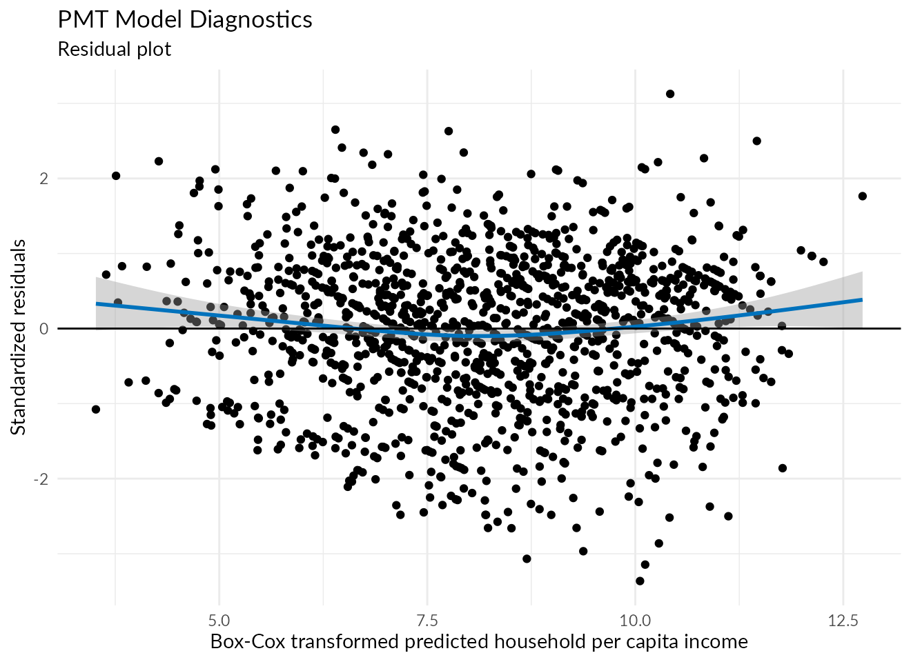
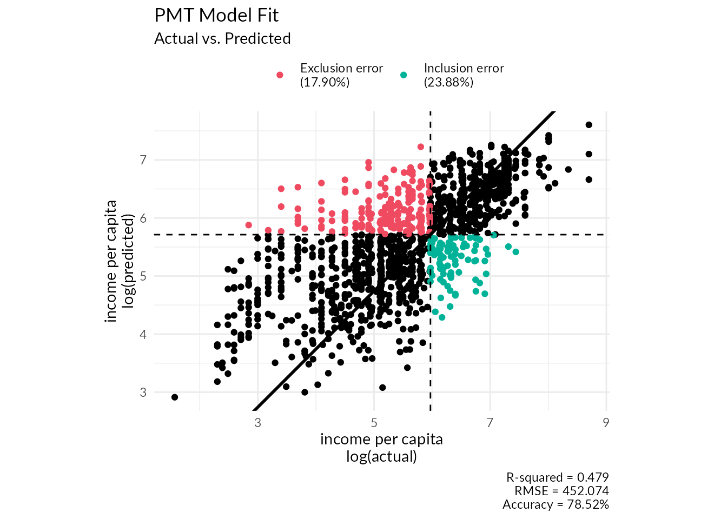
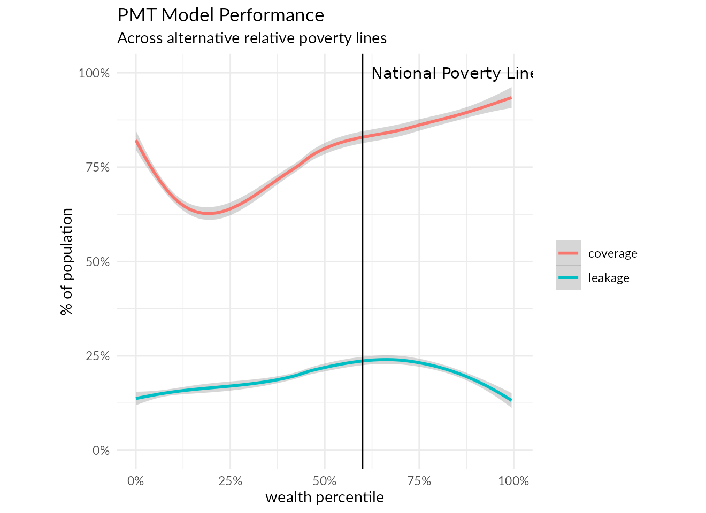

vignettes/Targeting.Rmd
Targeting.RmdThe targeting of assistance in humanitarian settings has traditionally relied on various approaches that are lacking in theoretical justification and rigorous validation such as targeting based on categorical profiles (older people, persons with disabilities, etc…), community-assisted targeting which is susceptible to elite capture, geographic targeting, and ad hoc scorecards among others.
Proxy-means testing, on the other hand, is a statistically-sound approach grounded in regression analysis which has gained a strong following among development practitioners.
In PMTs, vulnerability is assumed to be a directly measurable construct such as per-capita household income or expenditure and a statistical model is built to estimate this measure based on easily observable household characteristics (like location, the household’s demographic composition, and ownership of common assets). Uptake of PMTs in humanitarian contexts in the past was held back by the shortage of household survey data with sufficient covariates and detailed measures of income/expenditure to allow for constructing these kinds of models. The recent drive for surveys on forcibly displaced populations over the past few years, however, is slowly changing the data landscape in a way that makes it increasingly feasible to transition from ad hoc targeting approaches to more rigorous alternatives like PMTs.
The biggest challenge facing the construction of a PMT for Guatemala is the absence of a recent poverty survey, where the last one dates to 2014. As such, the second-best option was to use data from the Latin America Public Opinion Poll Project (LAPOP)’s AmericasBarometer survey for building the model. While the survey was not designed as a household budget survey to capture detailed household income/expenditure data, it remains the only up-to-date nationally representative household survey in Guatemala.
Downsides to using this dataset for building a PMT:
Nonetheless, despite these challenges, the performance of the model so constructed from this dataset was reasonably satisfactory enough to warrant further consideration.
library(AmericasBarometer)
library(tidyverse)
library(tidymodels)
library(haven)
library(embed)
set.seed(1)
# Read data from the AmericasBarometer
data <- read_dta("http://datasets.americasbarometer.org/database/files/Guatemala%20LAPOP%20AmericasBarometer%202019%20v1.0_W.dta")
data <-
data %>%
# Convert coded responses into human-readable labels
as_factor() %>%
# Replace variables indicating missingness with actual NAs
mutate(across(where(is.factor), ~na_if(., "No sabe")),
across(where(is.factor), ~na_if(., "No responde")),
across(where(is.factor), ~na_if(., "No Aplica")),
across(where(is.factor), fct_drop))
# inverse of the Box-Cox transform
invBoxCox <- function(x, lambda) { if (lambda == 0) exp(x) else (lambda*x + 1)^(1/lambda) }
# utility function to extract the best cutoff threshold from a regression model for a given poverty line
optimum_threshold <- function(.x, truth, estimate, cutoff) {
.x %>%
mutate(poor = as_factor({{truth}} < {{cutoff}})) %>%
roc_curve(poor, {{estimate}}) %>%
arrange(desc(sensitivity+specificity)) %>%
head(1)
}
mdata <-
data %>%
transmute(# area-level variables
region = estratopri,
province = prov,
urban = ur == "Urbano",
# Create a binary variable indicating if the household lives in a secure neighborhood or not
secure_neighborhood = str_detect(aoj11, "inseguro", negate = TRUE),
# household composition
hhsize = fct_recode(q12c, "20" = "20+") %>% as.character() %>% as.numeric(),
nchildren = fct_recode(q12bn, "0" = "Ninguno") %>% as.character() %>% as.numeric(),
# fix incorrect entries where the reported number of children is greater than the household size
hhsize = if_else(hhsize <= nchildren, hhsize+nchildren, hhsize),
ethnicity = fct_relevel(etid, "Otra", after = 0),
# household assets
refrigerator = r3 == "Sí",
mobile = r4a == "Sí",
vehicle = r5 != "No",
washing_machine = r6 == "Sí",
microwave = r7 == "Sí",
motorcycle = r8 == "Sí",
water = r12 == "Sí",
sanitation = r14 == "Sí",
computer = r15 == "Sí",
internet = r18 == "Sí",
tv = r1 == "Sí",
# target variable
pcinc =
case_when(q10new == "Ningún ingreso" ~ NA_real_, # delete zero-income observations
q10new == "Menos de 240 quetzales" ~ 120, # bottom-code responses
q10new == "Más de 5,500 quetzales" ~ 6000, # top-code responses
TRUE ~
# otherwise, parse the range quoted (i.e. "earning between X & Y quetzales")
# and use the mid-point as the estimated household income
str_match(as.character(data$q10new), "Entre (.+) y (.+) quetzales") %>%
{(parse_number(.[,3])+parse_number(.[,2]))/2}),
# divide by household size to convert to per-capita income
pcinc = pcinc/hhsize)
# remove observations with missing income data
mdata <- mdata %>% filter(!is.na(pcinc))Survey respondents were asked to report aggregate household income through a multiple-choice question where they had to choose from one of 17 staggered income brackets. Respondents who declined to answer the question, or who said that they didn’t know the answer, as well as those who reported zero income were all removed from the sample. Of the 1596 respondents in the sample, only 1308 were retained for modeling purposes after removing the aforementioned respondents.
The below plot shows the distribution of household income per capita in the retained sample:
mdata %>%
ggplot() +
geom_density(aes(log(pcinc)), fill = "#0072BC") +
scale_y_continuous(labels = scales::label_percent()) +
labs(x = "Log(per capita income)", y = "density",
title = "Distribution of household income per capita",
caption = "Data source: AmericasBarometer - Guatemala, 2019") +
theme_minimal(base_family = "Lato")
As could be seen from the plot, the data shows a right-skew that violates the normality assumption of linear models. To overcome this issue, we’ll apply the Box-Cox transformation to make the outcome measure slightly more normal.
The following plot illustrates the variables that entered the model and their impact on the model’s predictions:
# build a recipe to prepare data for modelling
rec <-
mdata %>%
recipe(pcinc ~ .) %>%
# the BoxCox is a power-transformation similar to the logarithm that makes long-tailed data look a bit more normal
# after testing plain logarithm transformations and the shifted-logarithm, the Box-Cox showed the best performance
# so that's what we're using here
step_BoxCox(pcinc) %>%
# convert logicals into 0/1 variables - makes for more readable variable labels when plotting
step_mutate_at(where(is.logical), fn = as.numeric) %>%
# use bagged trees to impute missing values in the predictors
step_impute_bag(all_predictors()) %>%
# target-encode province (too many levels) using emperical bayes procedure
step_lencode_mixed(province, outcome = vars(pcinc)) %>%
# create an interaction term that captures the dependency ratio in the household
step_interact(~hhsize:nchildren) %>%
# dummy-encode factor variables for modelling
step_dummy(all_nominal_predictors()) %>%
prep()
# fits a linear model to the data after being processed thru the recipe
m <- lm(pcinc~., data = rec %>% juice())
# convert model into tidy format
tidym <-
tidy(m, conf.int = TRUE) %>%
# remove the intercept term
filter(term != "(Intercept)") %>%
# create "categories" grouping together related variables
mutate(category = case_when(term %in% names(mdata %>% select(region:secure_neighborhood)) ~ "Area-level indicators",
str_detect(term, "region") ~ "Area-level indicators",
term %in% names(mdata %>% select(hhsize:ethnicity)) ~ "Household characteristics",
str_detect(term, "(ethnicity|hhsize)") ~ "Household characteristics",
term %in% names(mdata %>% select(refrigerator:tv)) ~ "Household assets"),
category = factor(category, levels = c("Area-level indicators", "Household characteristics", "Household assets")))
# plot model coefficients
tidym %>%
ggplot(aes(estimate, term)) +
geom_pointrange(aes(xmin = conf.low, xmax = conf.high)) +
geom_vline(xintercept = 0) +
facet_grid(rows = vars(category),
scales = "free_y", space = "free_y",
labeller = as_labeller(function(x) str_replace(x, " ", "\n"))) +
# convert raw variable names into something more human-readable
scale_y_discrete(labels = function(x) {
case_when(x == "tv" ~ "TV",
x == "washing_machine" ~ "Washing machine",
x == "secure_neighborhood" ~ "Secure neighborhood",
x == "region_Sur" ~ "Region = Sur",
x == "region_Nororiente" ~ "Region = Nororiente",
x == "region_Noroccidente" ~ "Region = Noroccidente",
x == "nchildren" ~ "Number of children",
x == "hhsize_x_nchildren" ~ "Household size x\n Number of children",
x == "hhsize" ~ "Household size",
x == "ethnicity_Ladina" ~ "Ethnicity = Ladina",
x == "ethnicity_Indígena" ~ "Ethnicity = Indígena",
TRUE ~ str_to_sentence(x)) }) +
labs(x = NULL, y = NULL,
title = "PMT Model",
subtitle = "Coefficients of model covariates") +
theme_light(base_family = "Lato")
The signs of all coefficients are in line with what’s expected: households in urban areas have higher incomes than those in non-urban areas, and higher average income in a province is similarly correlated with higher household welfare. Likewise, larger households, and households with high numbers of children tend to be poorer on average. Meanwhile, ownership of common household assets and access to basic services (water, sanitation) are consistently indicative of a higher living standard.
Plotting standardized residuals against fitted values could help us detect the presence of heteroskedasticity (i.e., if the variance of residuals is non-constant across the predicted values) which is a violation of the linear regression assumptions.
augment(m) %>%
ggplot(aes(.fitted, .std.resid)) +
geom_point() +
geom_smooth(color = "#0072BC") +
geom_hline(yintercept = 0) +
labs(x = "Box-Cox transformed predicted household per capita income",
y = "Standardized residuals",
title = "PMT Model Diagnostics",
subtitle = "Residual plot") +
theme_minimal(base_family = "Lato")
Ideally, the blue line in the above plot should be as close to flat as possible. In our case, we could confirm that the errors are normally distributed.
Another important diagnostic to look at is Cook’s D. The statistic is used to measure the influence of individual observations on the overall model, essentially capturing how much the model’s predicted values would change on average if the respective observation was deleted prior to model fitting. Two commonly used cut-off values for identifying influences are observations with a Cook’s D of >1 or >4/(# of rows in data).
augment(m) %>%
ggplot() +
geom_dotplot(aes(.cooksd), binwidth = .00005, method = "histodot") +
geom_vline(xintercept = 4/nrow(mdata), color = "red") +
annotate("text", x = 4/nrow(mdata), y = 1, label = "Cut-off point", hjust = -.05) +
labs(x = "Cook's D", y = "Density",
title = "PMT Model Diagnostics",
subtitle = "Cook's D") +
theme_minimal(base_family = "Lato")
From the above plot we could see that there are a few data points in the dataset that are heavily biasing the predictions of the model. Normally we would explore the characteristics of those points to understand what’s so special about them and how to recode them to lessen their influence on the model, but that won’t be done here given the limited number of options for recoding the already limited covariates entering the model.
Ultimately, any assessment of a PMT model should rest above all on its ability to correctly identify poor households. According to the last official data from 2014, almost 60% of the population were living below the national poverty line. Since that figure has not been updated in a long time, we’ll just use the 60th income percentile as a relative poverty line for assessing the performance of the PMT.
# extract poverty predictions
mdata <- mdata %>% mutate(pred_pcinc = predict(m) %>% invBoxCox(lambda = tidy(rec, 1)$value))
# poverty line at 60th percentile of the income distribution
pline <- quantile(mdata$pcinc, .6)
# adjust cut-off threshold to optimize predictive performance
thresh <- optimum_threshold(mdata, pcinc, pred_pcinc, pline)$.threshold
# convert continuous per-capita measures to binary poverty indicators
mdata <- mdata %>% mutate(poor = as_factor(pcinc < pline), pred_poor = as_factor(pred_pcinc < thresh))
# label cases that are incorrectly classified
mdata <-
mdata %>%
mutate(class = case_when(poor != "TRUE" & pred_poor == "TRUE" ~
glue::glue("Inclusion error\n({scales::label_percent(accuracy = .01)(1-spec_vec(mdata$poor, mdata$pred_poor))})"),
poor == "TRUE" & pred_poor != "TRUE" ~
glue::glue("Exclusion error\n({scales::label_percent(accuracy = .01)(1-sens_vec(mdata$poor, mdata$pred_poor))})")))
# plot true vs. estimated values
mdata %>%
ggplot() +
geom_point(aes(log(pcinc), log(pred_pcinc)), data = function(x) {filter(x, is.na(class))}) +
geom_point(aes(log(pcinc), log(pred_pcinc), color = class), data = function(x) {filter(x, !is.na(class))}) +
geom_vline(xintercept = log(pline), linetype = 2) +
geom_hline(yintercept = log(thresh), linetype = 2) +
geom_abline(intercept = log(thresh/pline), size = 1) +
scale_color_manual(values = c("#EF4A60", "#00B398")) +
coord_fixed() +
labs(x = "income per capita\nlog(actual)", y = "income per capita\nlog(predicted)",
color = NULL,
title = "PMT Model Fit",
subtitle = "Actual vs. Predicted",
caption = glue::glue("R-squared = {round(rsq_vec(mdata$pcinc, mdata$pred_pcinc), 3)}",
"RMSE = {round(rmse_vec(mdata$pcinc, mdata$pred_pcinc), 3)}",
"Accuracy = {scales::label_percent(accuracy = .01)(accuracy_vec(mdata$poor, mdata$pred_poor))}",
.sep = "\n")) +
theme_minimal(base_family = "Lato") +
theme(legend.position = "top")
As could be seen from the plot, the model exhibits reasonable performance on par with most PMTs employed in governmental social safety nets. A better understanding of the model’s predictive performance could be reached by looking at how inclusion/exclusion errors vary as the cut-off threshold (=poverty line) moves along the spectrum of wealth percentiles.
# prepare a data-frame of performance measures at different cut-off points
tradeoffs <-
unique(mdata$pcinc) %>% sort() %>% tail(-1) %>%
map_dfr(~optimum_threshold(mdata, pcinc, pred_pcinc, cutoff = .))
# visualize the alternatives curves
tradeoffs %>%
transmute(pcinc_percentile = percent_rank(.threshold),
coverage = sensitivity,
leakage = 1-specificity) %>%
pivot_longer(-pcinc_percentile, names_to = "measure", values_to = "value") %>%
ggplot() +
geom_smooth(aes(pcinc_percentile, value, color = measure)) +
geom_vline(xintercept = .6) +
annotate("text", x = .6, y = 1, label = "National Poverty Line", hjust = -.05) +
scale_x_continuous(labels = scales::label_percent()) +
scale_y_continuous(labels = scales::label_percent()) +
coord_fixed(xlim = c(0,1), ylim = c(0,1)) +
labs(x = "wealth percentile", y = "% of population", color = NULL,
title = "PMT Model Performance",
subtitle = "Across alternative relative poverty lines") +
theme_minimal(base_family = "Lato") +
theme(legend.position = "right")
When used to target people living below the national poverty line, the model arrives at the wrong conclusion for 1 in every 5 persons. Lowering the eligibility cut-off line to focus on the poorer quantiles of the population degrades model performance even further. Does that mean that the PMT is not a valid targeting option in this setting? The answer is not so clear-cut. On the one hand, the dataset used for model building lacked sufficient covariates and didn’t allow for the inclusion of demographic variables into the model which greatly restricted its predictive power. Meantime, the choice of linear regression was always going to give better results for households towards the mean of the income distribution rather than those on either tail. If the objective was to target, say, the poorest 20% then alternative modeling techniques (such as quantile regression or up/down-sampling) would’ve given better results. More importantly, while the error margin of the model may be perceived as unusually high, it is better to have a model with a quantifiable error rate (albeit high), than to resort to the common ad hoc targeting approaches for which no error estimates could be meaningfully derived.